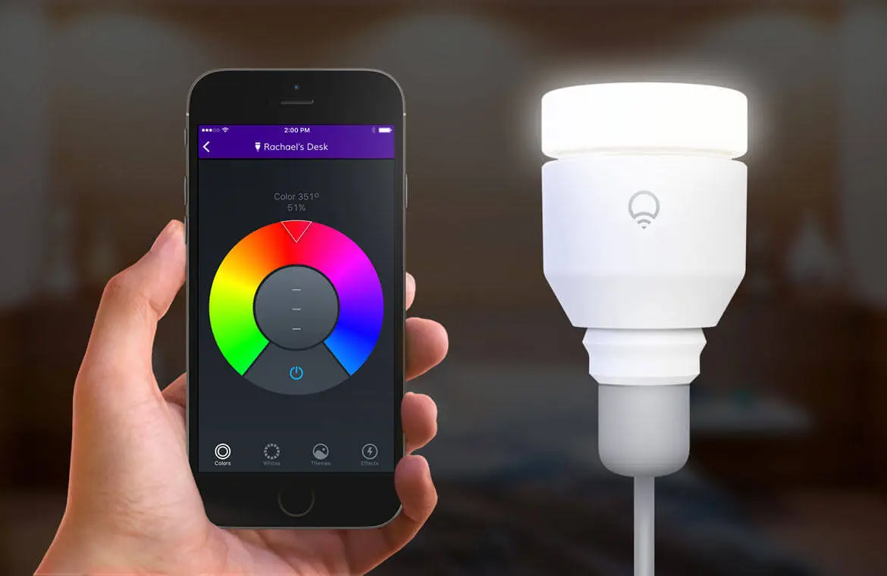
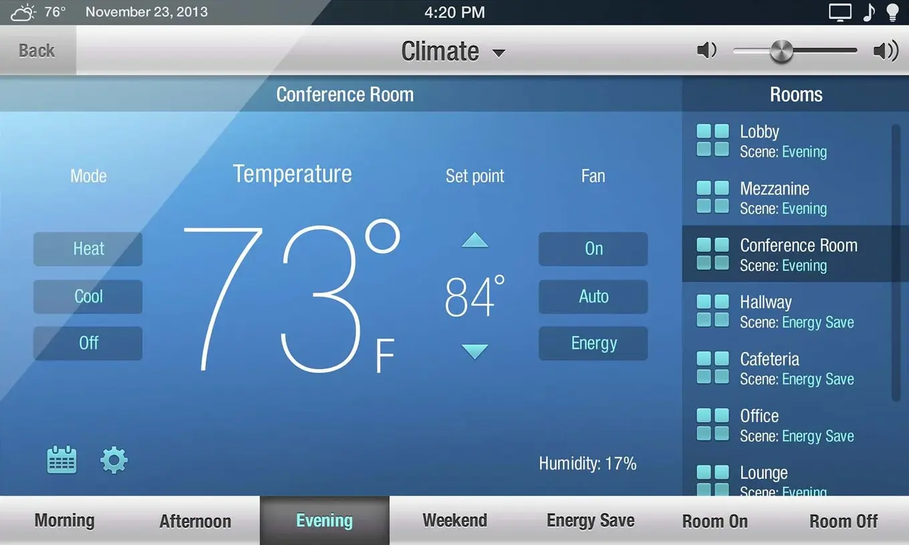
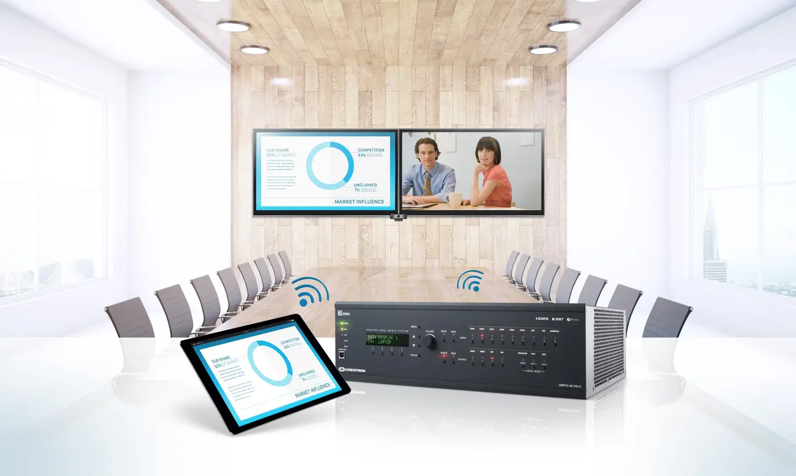
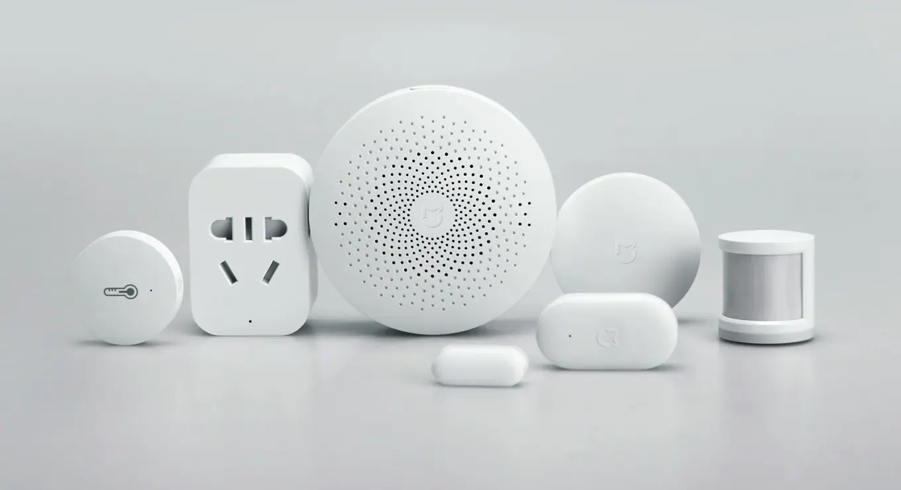
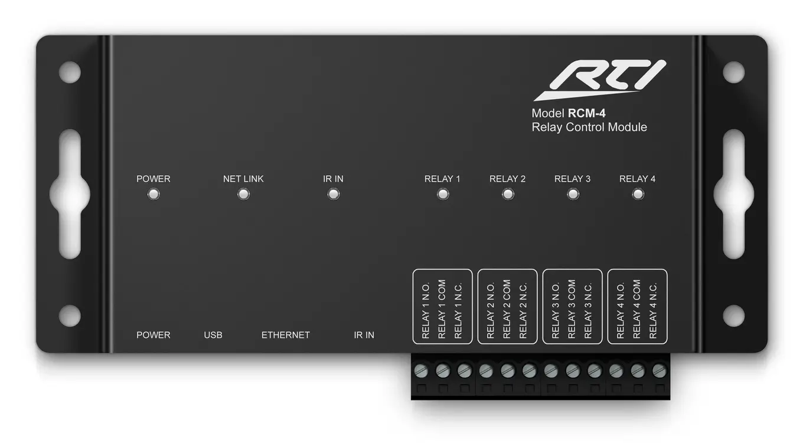
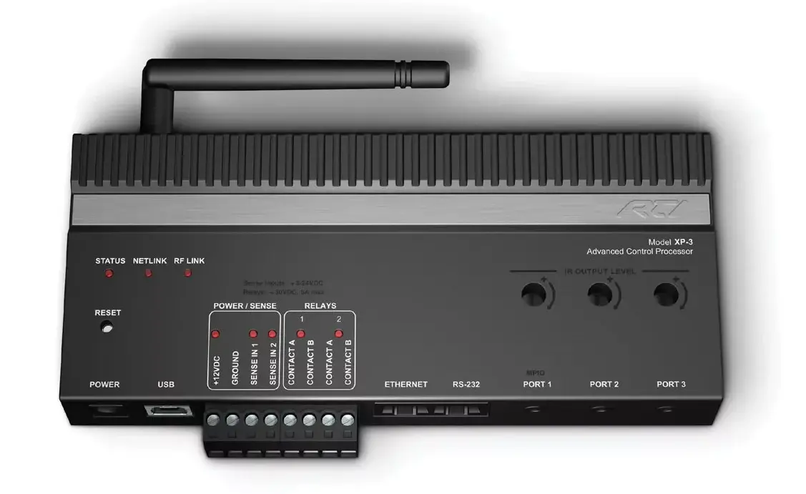
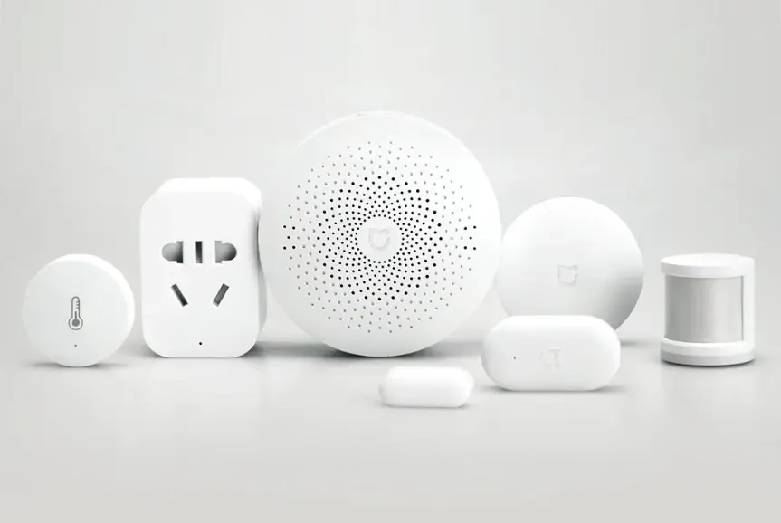
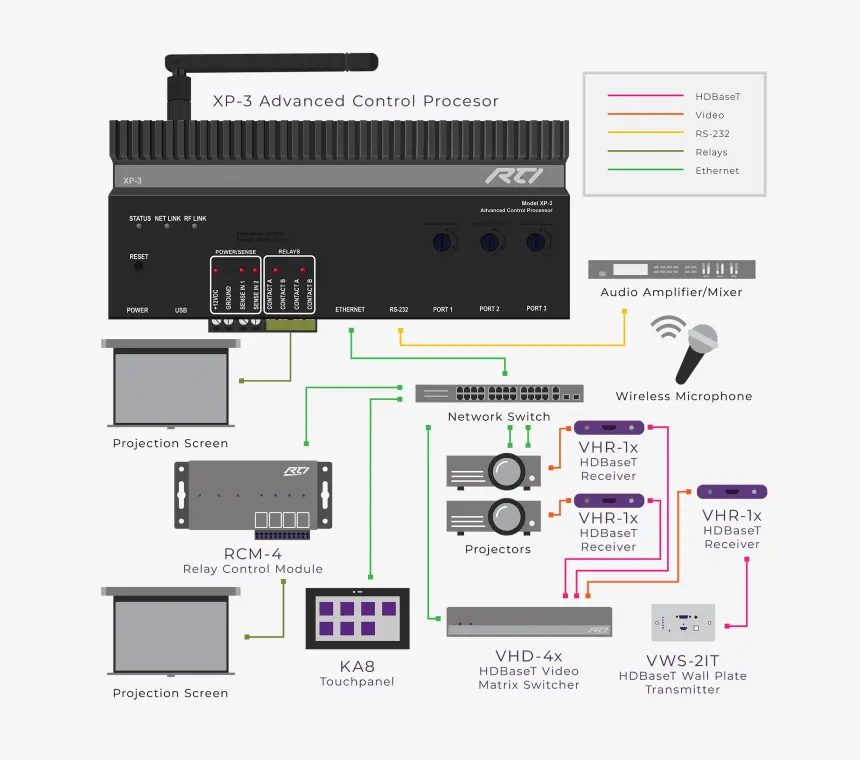
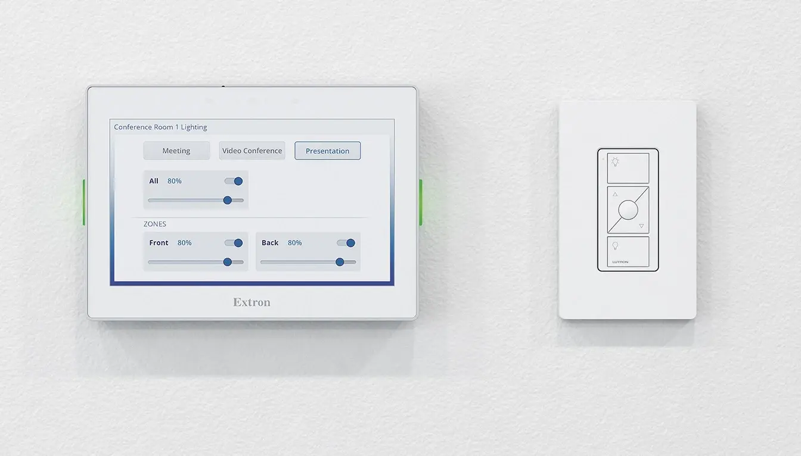

Основные возможности систем управления мультимедиа оборудованием
Современные системы управления сочетают гибкость, легкость настройки и впечатляющий функционал. Вот лишь несколько примеров того, на что способны такие системы:
Управление освещением

Одна из самых востребованных функций систем управления мультимедиа – это управление освещением, в офисе, в доме или в общественном заведении. Система позволяет управлять шторами, яркостью света, позволяет включать или выключать освещение, в случае применения светодиодных лент возможно управление цветом. Также возможно комбинирование всех перечисленных действий в один или несколько световых сценариев.
Управление климатическими условиями

Кондиционером сегодня никого не удивишь, но именно благодаря использованию систем управления стало можно создание собственного микроклимата в помещении, включая регулировку температуры и влажности, управление различными нагревательными приборами и системами вентиляции. Ранее подобные автоматические климатические установки использовались на производстве, но с развитием технологий стало возможно установить простую и эффективную систему управления климатом дома или в офисе.
Управление оборудованием

Широкий класс возможностей охватывает самые разные сферы применения: домашние и профессиональные аудиосистемы, телевизоры, проекторы, видеостены, кинотеатры и другое оборудование. Внедрение системы управления мультимедиа позволит управлять всем комплексом буквально нажатием одной кнопки. Нужный контент автоматически попадет именно на то устройство, где вы хотите его посмотреть. Причем все системы работают слаженно: например, в кинотеатре при включении проектора будет плавно погашен свет, приглашая к просмотру фильма, а перед началом показа презентации в офисе автоматически закроются шторы.
Обеспечение безопасности

Система управления мультимедиа способна взять на себя функции сторожа. Датчики, подключенные к системе, могут контролировать состояние дверей и окон, сигнализировать о движении или о посторонних звуках. Существуют решения и для контроля бытовых систем, от электрической сети до канализации и отопления.
Управление произвольными устройствами

Автоматизировать можно даже то оборудование, которое изначально не подразумевало автоматического функционирования. Специальные устройства (актуаторы), а также управляющие контроллеры позволяют подключить к системе управления мультимедиа практически любые технические устройства, а также привязать их работу к показаниям тех или иных датчиков. Таким образом можно автоматизировать водоснабжение объекта или систему пожаротушения, электрические антиобледенители, проветривание, а при желании даже включение кофе-машины.
Состав оборудования систем мультимедиа управления
В этом разделе мы попытались показать основные элементы системы управления оборудованием, с помощью которых можно организовать полноценную систему умного дома. Весь ассортимент продукции данной категории значительно шире. Вот некоторые из них: Сплиттеры сигнала Коммутаторы Видеопроцессоры Модули управления диммерами Модули расширения Модули преобразователи и другие устройства
Управляющий процессор

Управляющий процессор осуществляет согласование подключенных устройств и реализует логику функционирования всей системы. На корпусе управляющего процессора расположены входные и выходные порты для подключения датчиков и устройств управления: Ethernet, RS-232, релейные порты, ИК-порты, MPIO и другие, через которые осуществляется коммутация исполнительных устройств и сбор данных с датчиков. Часто управляющий процессор выполняется модульным, позволяющим масштабировать его возможности путем подключения дополнительных управляющих плат. Такое решение позволяет значительно сократить стоимость модернизации или расширения системы.
Датчики

В эту группу устройств входят различные сенсоры: датчики освещенности, датчики присутствия, датчики звука, датчики наличия напряжения в сети и многие другие. По отношению к системе управления мультимедиа датчики являются ее «органами чувств».
Исполнительные устройства

К исполнительным устройствам относятся все устройства, которыми управляет система управления мультимедиа: выключатели, диммеры, привода различного назначения, например, привод моторизованного проекционного экрана или штор. Замки на дверях, электромагнитные клапаны системы водоснабжения, система сигнализации, системы кондиционирования и поддержания климата, аудио и видеооборудование тоже являются конечными исполнительными устройствами.
Устройства взаимодействия с пользователем

Сюда относятся все интерактивные устройства, позволяющие управлять всеми возможностями мультимедиа системы управления. Пользователь может взаимодействовать с системой с помощью пультов управления, настенных или врезных сенсорных панелей, планшетных или настольных ПК и даже с собственного смартфона. В каждом конкретном случае выбор интерфейса обусловлен удобством пользования, диапазоном функций, требующих пользовательского контроля, и бюджетом проекта.
Основные достоинства мультимедиа систем управления
Из вышеизложенного уже понятно, что при грамотной интеграции и настройке система управления мультимедиа способна предоставить своему владельцу колоссальные преимущества. Тем не менее, давайте обозначим наиболее важные из них. Централизованность Система управления мультимедиа объединяет в единую сеть все устройства, оборудование и подчиненные системы, что позволяет производить мониторинг и управлять всей системой централизованно. Например, с установленного на стене сенсорного экрана, или с планшета. Не менее важно, что устройства в системе работают согласовано.